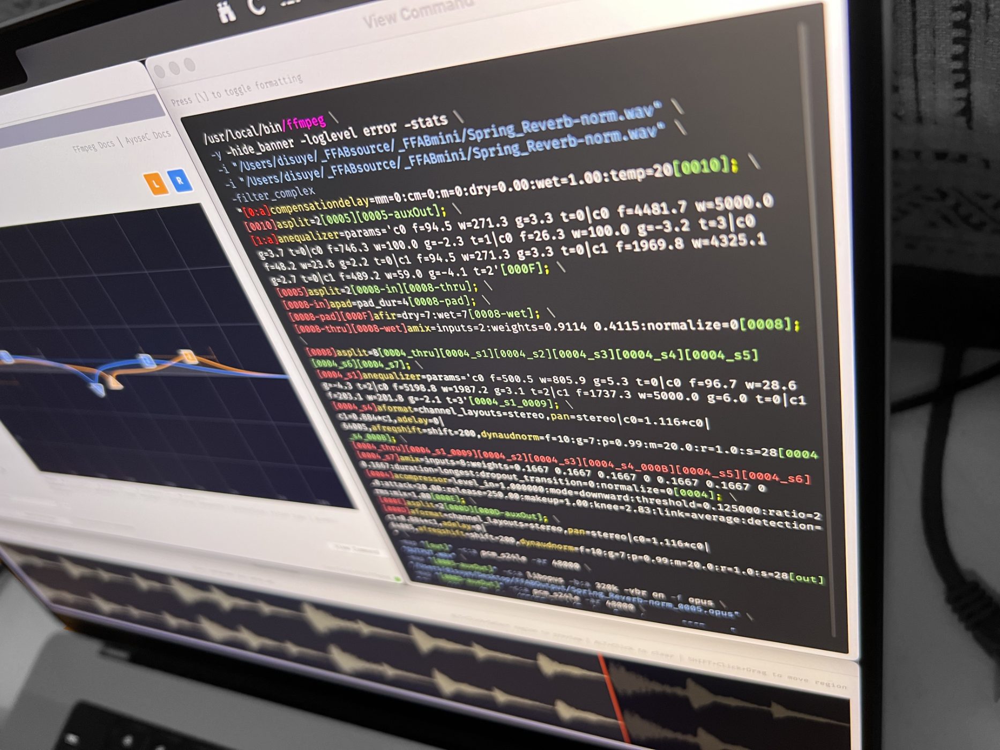
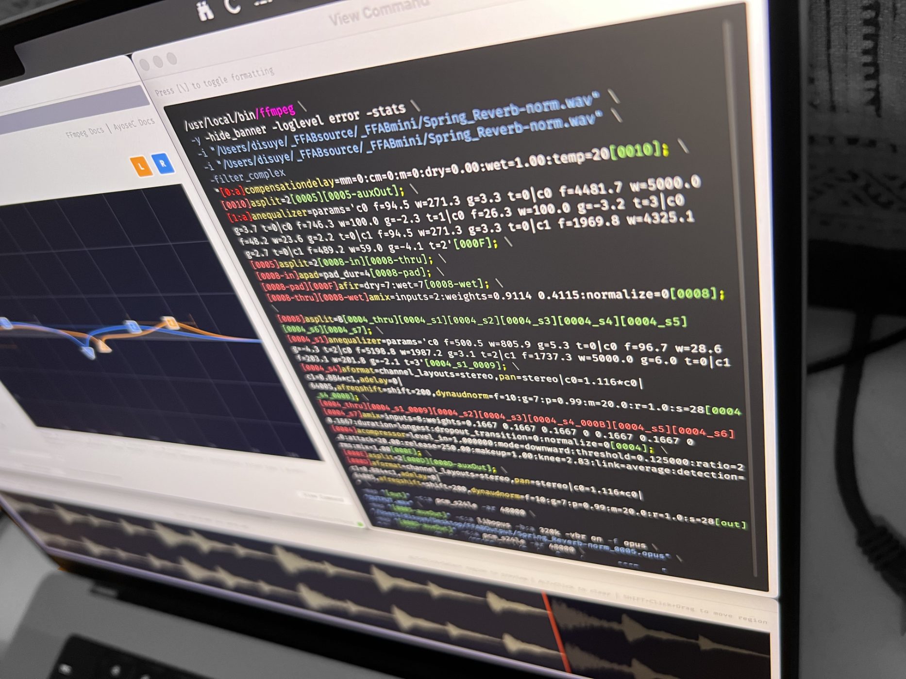

FFAB is a cross-platform, complex audio batch processor, effects rack, command builder & graphical user interface for the glorious FFmpeg.
But only the sound related stuff.
FFAB is for musicians, sound engineers, media archivists, sonic artists, mental experimentalists, or anyone curious enough to collide thousands of files together into one hot mess.
FFAB Overview
Current Version: 0.1.4
FFAB is a GUI wrapper for FFmpeg that makes designing complex audio filter chains easily accessible to non-command-line users. Real-time preview. Drag & drop filters. Parallel processing, the works.


 

FFAB creates and processes complex FFmpeg filter chain commands without embedding FFmpeg code: FFAB locates & and calls the user's locally installed FFmpeg binary (version 8).
FFAB also simplifies the process of installing FFmpeg and companion tools FFplay & FFprobe. The latest static version is fetched from an official distribution source, FFAB verifies the download (SHA-256 / MD5 sums), and installs to an easily accessible path.
 FFAB will install FFmpeg, if you need it...
FFAB will install FFmpeg, if you need it...App Architecture
Visual Filter Chain Builder
Drag-and-drop filter ordering with vertical "effects rack" design
Sidechain Audio Inputs & Aux Outputs
Load sidechain files, convolution IRs, save outputs to multiple formats simultaneously
Real-time Preview
Generate fast audio previews with waveform visualization; scrubbing playhead & playback region select
Batch Processing
Process multiple File Lists with 7 different batch algorithms
Video Passthrough
Input video files – add audio-only effects – then combine the revised audio with the original quality, untouched video
Preset System
Save/load complete processing states including filter chains filter parameters, input file lists (optional), and output format settings
FFmpeg Audio Filters
Almost all standard filters, including analysis & advanced utility filters, are included in the UI
Command Line Integration
Build FFmpeg commands to process in FFAB, or copy & paste complete commands directly to the Terminal
Filter Chain Overview
Clutter free UI: Filter Chain displayed on the left, currently selected filter parameters displayed on the right.
Familiar DAW / digital mixing console style effects rack: File INPUT settings at the top, file OUTPUT settings at the bottom, drag & drop inserts & AUX sends in the middle.
Every filter insert shares a similar UI design... With regards the image above, from left to right:
HexID Label
Sequentially generated ID label, aids matching UI to streams within an FFmpeg Command
Move Up / Move Down Buttons
Arrange filter order via these buttons, or drag & drop
Mute / Solo Toggle Switches
Mixer style bypass / isolate switches, individually or in groups
Delete Button
Remove filter from the effects chain; ALT+click to skip delete dialogs
Custom Output Enable
Advanced: Bypass the hardcoded audio stream; for use with the Custom FFmpeg filter or similar
Audio Filters
FFmpeg ships with 120+ audio related filters and FFAB has managed to incorporate most of them. A few more esoteric filters will appear in future updates.
Some of FFmpeg's default filters include...
Sidechain Input
Convolution IR (reverb), Compressor, Gate, Merge, Mix, Crossfade
Dynamics
Compressor, Limiter, Gate, De-esser, Loudness Norm, Dialogue Enhance
EQ & Filters
Channel EQ, Parametric EQ, High/Low/Band/Notch Filters, Shelving filters, Tilt EQ, 18-Band EQ
Harmonics
Soft Clipper, Bit Crusher, Psychoacoustic Clipper, Crystalizer
Modulation
Chorus, Flanger, Phaser, Tremolo, Vibrato
Stereo & Spatial
Channel Splitter, Widener, M/S & Stereo Tools, Crossfeed, SOFA Spatializer, Surround Upmix
Time & Pitch
Rubberband, Loop, Trim, Fade, Echo, Tempo, Delay
Restoration
FFT Denoise, Declick, Declip, DC Shift, Silence Remove, Resample, Set Rate
Utility
Volume, Resample, Silence Remove, HDCD Decoder
Analysis
Waveform Image, Volume Detect, DR Meter, ReplayGain, Audio Stats, Silence Detect
FFAB Routing & I/O
Sidechain Input, Aux Output, Audio Split, Smart Aux Return
Input / Output
Input Formats
WAV, MP3, FLAC, AIFF, M4A, OGG, Opus, WMA, AAC... any audio format included with FFmpeg
Output Formats
WAV, AIFF, FLAC, MP3, AAC, OGG, Opus... any audio format included with FFmpeg
Video Passthrough
Batch process movie files, filter the audio, then re-combined with original video, no transcode or quality loss
Sample Rates
8kHz ~ 192kHz (384kHz untested)
Bit Depths
8-bit, 10-bit, 12-bit, 16-bit, 24-bit, 32-bit (64-bit untested)
Metadata Extraction
- Format (file extension)
- Duration (HH:MM:SS)
- Sample Rate (Hz)
- Bit Depth
- Channels (mono, stereo, surround)
- Bitrate (kbps)
Audio Previews
Instant audio preview of FFmpeg filter chains, plus a helpful waveform image and scrub playhead. Highlight any audio file in the Main File List, click [Generate Preview] in either the main app window or from within the larger pop-out Audio Preview window, then press [Play].
Or, lean into the key command combo of [↑/↓] in the File List, [←] to generate preview files then [→] to play audio.
The pop-out Audio Preview window is resizable and provides precise tools to highlight a specific audio region – say, a more representative section of the audio to be auditioned. This is helpful when handling long duration files (podcast dialog, archive recordings etc).
- Waveform visualization: Visual representation of audio
- Click-to-seek: Click waveform to jump to position
- Drag-to-scrub: Drag playhead for precise positioning
- Audio Preview Window: Expanded view for detailed scrubbing
- Region selection: ALT+drag to select region for focused playback
- Region move: SHIFT+drag to reposition region
- Time display: Current position and total duration
Batch Processing Modes
The underlying concept of FFAB is fast and painless audio batch processing, either for utility or purely creative reasons.
#1 Sequential
- Convert a folder of 24/96k AIFF → FLAC & MP3 & 16/44k WAV all in one pass
- Normalize dialog on 100+ raw video files without transcoding video
- Apply EQ, Compression, DC Offset, noise reduction on 1000+ audio files
#2 Iterate
- Photocopy of a photocopy of a photocopy...
- Sound design, digital degredation analysis, feedback loops
- Get creative!
#3 Zip
- Input two folders: 001-mono-L.wav + 001-mono-R.wav → 001-stereo.wav
- Insert custom audio soundbites on a per-file basis
- Complex 5.1 or multichannel audio tasks
#4 Broadcast Fixed
- Watermark a folder of audio files with one ident
- Demo one IR reverb against many audio files
- Duck one background music file below numerous dialog files
#5 Broadcast Random
 Batch Algorithm #5: Broadcast Random
Batch Algorithm #5: Broadcast Random - Apply random background foley to
- Sound design, inspiration generator
- Embrace chaos...
#6 Cartesian
- Test 100+ IR Impulse Response files against one test signal
- Generative music: Create random generative algos
- Sound design: Mash up your sample library
#7 Cartesian Triple
- Combine a few source files → new unique library
- Inspiration, generative audio, sound design
- Combine drums hits with timing & trim to generate new loops
- We do it because we can, not because we know why
Batch Processing Features
- Pause/Resume functionality
- Cancel with cleanup
- Per-file & intra-file progress bars
- Process time elapsed / remaining
- Success / failure counts
- Total batch disk size estimation vs. disk space available
- Multiple confirmation dialogs for mathematically large batches
Special Filters
Audio Input / Sidechain Filter
- Dedicated file list per instance
- Add File(s) / Add Folder / Clear List
- Metadata scanning toggle or Rescan after import
- Run multiple instances for complex setups
Audio Split (asplit)
- Up to 8 parallel streams
- Sub-chain support for each stream
- Separate mute/solo per stream
- Aux output per stream
- Advanced: Nested Asplit possible
Aux Output Filter
- Branch audio to separate output file
- Automatic naming for batch processing
- Continue main chain after branch
Smart Aux Return
- Automatic summing of lose filter outputs
- Position-based stream detection
- "Funnel all from above" capture logic
Custom FFmpeg Filter
- Raw FFmpeg command entry
- For advanced/experimental filters
- Rapid filter chain prototyping
- Use hardcoded audio routing or breakout to custom streams
UI Overview
Main Window Layout
- Left Panel: Filter chain with effects rack design
- Right Panel: Context-sensitive settings (input/filter/output)
- Bottom: Waveform preview with transport controls
Additional Windows
- View Command: Raw FFmpeg command string, optional syntax highlighting
- Audio Preview: Pop-out & extended version of the Generate Preview player
- Batch Settings: Comprehensive process controls & output verification
Visual Indicators
- Color-coded Filter IDs: Unique HSL colors & hexidecimal labels per filter
- FFmpeg Status LED: Green when available, red when missing
- Progress bars: Per-file progress, intra-file progress; depending on process
- Orange playhead: Current position on waveform
Theme Support
- Automatic light/dark mode detection
- Theme-aware waveform and UI elements
Command Building
Filter Chain commands build with these key methods. API breakout not fully implemented but in progress.
buildCompleteCommand()
← multiple overloads:
- 2-param: (inputFile, outputFile)
- 3-param: (inputFile, outputFile, mutedPositions)
- 3-param: (inputFile, sidechainFiles, outputFile)
- 4-param: (inputFile, sidechainFiles, outputFile, mutedPositions)
buildPreviewCommand()
← Generates preview with aux outputs discarded to null muxer
buildFilterFlags()
← Builds the -filter_complex "..." section
buildAuxOutputPath()
← Determines output paths for aux files
Who Calls FilterChain?
- BatchProcessor calls buildCompleteCommand()
- MainWindow calls buildCompleteCommand() for View Command
- PreviewGenerator calls buildPreviewCommand() for audio preview
Preset System
Save Options
- Save (Cmd+S) - Quick save to current preset
- Save As (Cmd+Shift+S) - Save with new name
- Save File Lists checkbox - Optionally include input file paths
Load Features
- Restore complete state (filters, parameters, settings)
- Mute/Solo state restoration
- Missing files detection and report generation
- Default preset location: ~/Documents/FFAB/Presets
Keyboard Shortcuts
Audio Preview Shortcuts
Downloads & Sys Reqs
Mac users might need to run the following Terminal command to get around Apple gate-keeping:
xattr -cr /Applications/FFAB.app
(Xattr often runs during brew installs / Electron apps, so it's fairly innocuous. But if you are unsure about the security implications, please search the web.)